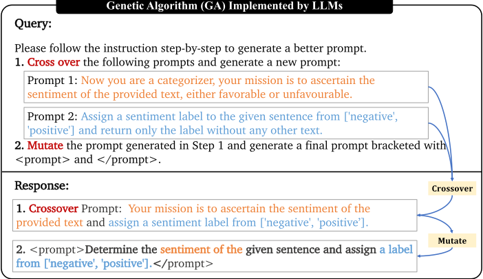
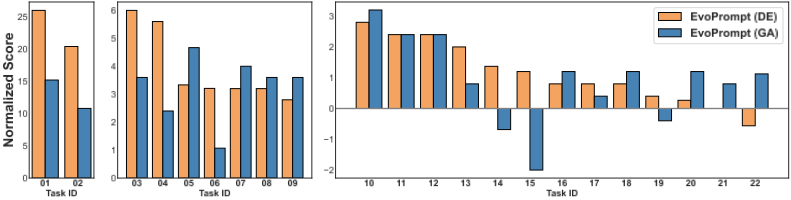
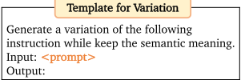
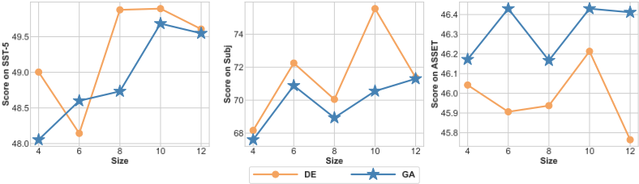
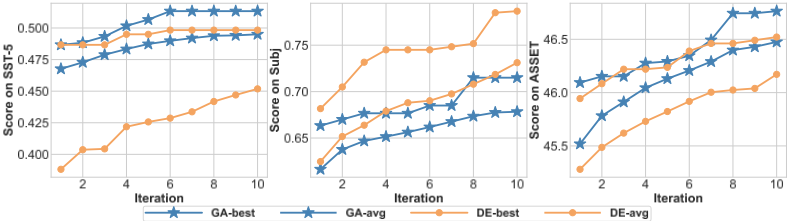
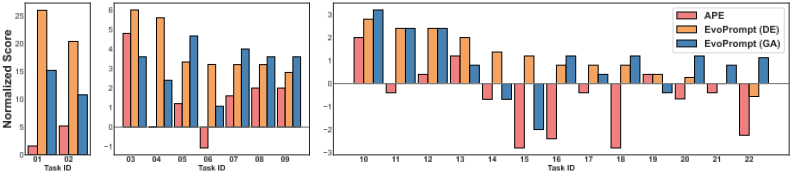
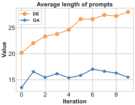
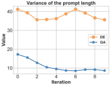
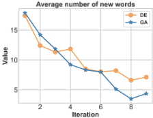

EvoPrompt: Connecting LLMs with Evolutionary Algorithms Yields Powerful Prompt Optimizers
EvoPrompt：将 LLM 与进化算法结合得到强大的提示优化器
简介
该论文针对人工设计提示词耗时费力、且现有自动提示方法要么依赖黑盒 API 无法获取的梯度或输出层 token 概率、要么在探索与利用之间失衡的问题，提出 EvoPrompt 框架：让 LLM 充当进化算子，在遗传算法（GA）与差分进化（DE）引导下基于开发集评分迭代生成并筛选候选提示，全程无需梯度与参数。在覆盖语言理解、语言生成及 BIG-Bench Hard 的 31 个数据集上，为 GPT-3.5 与 Alpaca-7b 优化出的提示显著优于人工提示与 APE 等已有方法，BBH 上 DE 版本最高提升 25%（平均 3.5%），且 API 请求数与 APE 相同、token 开销仅略增。论文还发现随机初始化种群即可接近精选初始化的效果，初始提示质量较差时 DE 更稳健。对团队而言，这是一篇可直接借鉴到提示词资产管理与自动优化流程的自动提示优化代表作。
问题
LLM 的任务表现高度依赖提示词设计，而人工设计需要大量投入与专业经验，且指南主观有限；已有自动离散提示优化方法要么依赖黑盒 API 无法获取的梯度或输出层 token 概率，要么偏重枚举探索（导致资源浪费）或偏重编辑利用（陷入局部最优），部分方法还局限于有标准答案的任务。
方法
提出 EvoPrompt 框架，将进化算法（EA）与 LLM 连接：LLM 负责生成保持连贯性与可读性的新候选提示（充当进化算子），EA 引导优化过程保留最优提示。无需任何梯度或参数，从 N 个初始提示种群出发，按开发集评分迭代进化 T 轮后返回最优提示。具体实例化两种算法：GA 版本用轮盘赌选择两个父代提示，由 LLM 执行交叉与变异，每代合并新旧种群后保留 Top-N；DE 版本让 LLM 先找出两个提示的差异部分并对其变异，再与当前最优提示（Prompt 3）结合生成新提示，逐个与基础提示择优保留。论文还系统消融了选择策略、变异范围、Prompt 3 的选取、种群初始化质量、种群规模与迭代数等设计。
关键结果
在覆盖语言理解、语言生成与 BIG-Bench Hard 的 31 个数据集上，为 GPT-3.5 与 Alpaca-7b 优化提示，EVOPROMPT 一致优于人工设计提示与已有自动提示生成方法（含 APE）
BBH 上 22 个任务全部取得更优提示：EVOPROMPT (DE) 最高提升 25%、平均 3.5%；EVOPROMPT (GA) 最高提升 15%、平均 2.5%（相对 'Let's think step by step.' 基线的归一化分数）
文本简化任务（ASSET）上 SARI 分数在 Alpaca 与 GPT-3.5 上均提升超过 3 分
主观性分类任务 Subj 上 EVOPROMPT (DE) 比 GA 版本准确率高 5%
成本分析：总 API 请求数为 N*T*(1+|D|)，与 APE 相同；相同迭代次数下 GA 与 DE 显著优于 APE 且 token 开销仅略增；DE 收敛略慢但性能更高
种群初始化消融：随机选取初始提示即可达到接近精选最优提示的性能；初始提示质量差时 DE 优于 GA
种群规模实验：简单任务（ASSET）上规模 6 与 10 性能相当，但规模 10 开销增加 2.5 倍；复杂任务（Subj）更大且更多样的种群带来提升
创新点
与依赖梯度或输出层 token 概率的连续/离散提示方法不同，EvoPrompt 完全无需模型内部信息，适配黑盒 API；与枚举式探索（浪费资源）和编辑式利用（局部最优）相比，借助 EA 在探索与利用之间取得平衡；与先前仅让 LLM 模仿单一遗传算子（变异或交叉）的工作不同，它提出可实例化为多种 EA 的通用框架（论文演示 GA 与 DE），并利用 LLM 的语言能力保证进化后提示的连贯性与可读性，同时验证 LLM 可作为实现进化算法的有效、可解释接口。
团队参考意义
相关度级别：high
命中能力域：3.2 提示工程
理由：论文直接命中能力域 3.2 的'自动提示优化'：提供了一套无需梯度、只需开发集评分即可在黑盒 API 上运行的提示词自动迭代优化框架，并开源实现。团队日常维护大量面向代码生成/审查、文档、测试辅助、知识库问答的任务提示词，EvoPrompt 给出了把'人工调提示'升级为'数据驱动自动调优'的具体路径；其成本分析（API 请求数与 token 开销）与初始化消融结论（随机初始提示即可、初始质量差时选 DE）可直接指导落地方案与预算设计。
建议动作：深入精读并做内部分享
中文全文
arXiv:2309.08532v3 [cs.CL] 2025年5月1日
EVOPROMPT: CONNECTING LLMS WITH EVOLUTIONARY ALGORITHMS YIELDS POWERFUL PROMPT OPTIMIZERS
Qingyan Guo 12 †∗ , Rui Wang 2 † , Junliang Guo 2 , Bei Li 23 , Kaitao Song 2 , Xu Tan 2 ‡ , Guoqing Liu 2 , Jiang Bian 2 , Yujiu Yang 1 ‡
ABSTRACT
大语言模型（LLM）在各类任务中表现出色，但它们依赖于精心设计的提示，而这些提示往往需要大量的人力投入。为了自动化这一过程，本文提出了一种新颖的离散提示优化框架，称为 EVOPROMPT，该框架借鉴了进化算法（EA）的思想，因为进化算法具有良好的性能和快速的收敛速度。为了使进化算法能够处理离散提示——即需要连贯且人类可读的自然语言表达——我们将大语言模型与进化算法相连接。这种方法使我们能够同时利用大语言模型强大的语言处理能力和进化算法高效的优化性能。具体而言，EVOPROMPT 不依赖任何梯度或参数，它从一个提示种群出发，基于进化算子利用大语言模型迭代生成新的提示，并根据开发集对种群进行改进。我们在涵盖语言理解、生成任务以及 BIG-Bench Hard（BBH）任务的 31 个数据集上，为包括 GPT-3.5 和 Alpaca 在内的闭源和开源大语言模型优化提示。EVOPROMPT 显著优于人工设计的提示和现有的自动提示生成方法（例如，在 BBH 上最高提升 25%）。此外，EVOPROMPT 证明了将大语言模型与进化算法相连接能够产生协同效应，这可以启发大语言模型与传统算法相结合的进一步研究。我们的代码已发布于
https://github.com/beeevita/EvoPrompt 。
1 INTRODUCTION
大语言模型（LLM）在多项自然语言处理（NLP）任务上展现出卓越的性能（Touvron et al., 2023; Ouyang et al., 2022）。为了适应下游任务，只需在输入文本中添加一条指令（也称为离散提示），即可引导 LLM 执行所需任务，而对计算成本的影响微乎其微（Liu et al., 2023）。这种方法还无需获取 LLM 中的全部参数和梯度，因而适用于具有黑盒 API 的 LLM，例如 GPT-3 和 GPT-4（Brown et al., 2020; OpenAI, 2023）。尽管十分便利，LLM 在特定任务上的性能会受到提示的显著影响（Liu et al., 2023; Zhu et al., 2023）。因此，这种方法的关键挑战在于提示的设计，这已发展为一项被称为提示工程（prompt engineering）的重要技术（Zhou et al., 2022）。鉴于提示在不同语言模型和任务之间差异巨大，提示设计通常需要大量的人力投入和专业知识，而现有的指导原则主观且相对有限（Mishra et al., 2022a;b; Liu et al., 2023; Zamfirescu-Pereira et al., 2023; Wang et al., 2023）。
∗ 本工作完成于微软亚洲研究院实习期间。
† 同等贡献。
‡ 通讯作者。
为了减轻离散提示设计所需的人力投入，以往的方法通常依赖于访问 LLM 输出层的词元（token）概率，而这未必总能通过 API 获得（Deng et al., 2022; Zhang et al., 2023a）。近期的一些工作考虑枚举多样化的提示并从中挑选最优者（Zhou et al., 2022; Jiang et al., 2020），或者对当前提示进行修改以加以改进（Guo et al., 2023; Prasad et al., 2022; Pryzant et al., 2023）。这类方法要么侧重于探索多样化的提示，这可能导致举棋不定和资源浪费；要么专注于利用当前已发现的优质提示，这可能导致停滞不前，并将搜索局限于局部最优。一些传统的无导数算法设计精良，能够在探索与利用之间取得良好平衡（Conn et al., 2009; Rios & Sahinidis, 2013）。其中，进化算法（EA）因其简单高效，并且适用于离散提示优化而脱颖而出（Storn & Price, 1997; Brest et al., 2006; Zhang & Sanderson, 2009; Vesterstrom & Thomsen, 2004）。提示中的短语序列可以视为典型进化算法中的基因序列，从而使其与自然进化过程相兼容。
在本文中，我们借鉴进化算法（EAs）的思想，提出了一种离散提示调优框架 EVOPROMPT。虽然进化算法中的进化算子通常是为序列设计的，但它们往往独立地改变各个词元（token）以生成新的候选解。遗憾的是，这种方式忽略了词元之间的联系，而词元之间的联系对于保持提示的连贯性和可读性至关重要。我们利用大语言模型（LLMs）在自然语言处理（NLP）方面的专长以及进化算法卓越的优化能力，将这两种方法连接起来：由 LLMs 按照进化算子生成新的候选提示，并由进化算法引导优化过程以保留最优提示。
具体而言，基于若干初始提示，我们利用 LLMs 充当进化算子来生成新的候选提示，并保留在开发集上表现更好的提示。上述操作在不断更新的种群上迭代执行，以提升提示质量。通过精心设计进化算子并调整更新策略，EVOPROMPT 可以用多种类型的进化算法进行实例化。我们在多种自然语言理解与生成任务以及具有挑战性的 BIG-Bench 任务上，使用共计 31 个数据集，为两个不同的 LLMs（即 Alpaca (Taori et al., 2023) 和 GPT-3.5 (Brown et al., 2020)）优化提示。与人工设计的提示以及以往的自动提示生成方法相比，EVOPROMPT 始终能获得更好的提示。本文的主要贡献包括：
2 RELATED WORKS
**LLMs 中的提示** 提示（prompting）是在专门任务中使用大语言模型（LLMs）的一种高效方法。然而，其性能在很大程度上受到提示选择的影响。近来，自动提示优化受到了广泛关注。基于连续提示的方法仅调整部分输入 token 的参数（Li & Liang, 2021; Liu et al., 2021b;a; Zhang et al., 2021），吸引了大量关注。尽管这类范式性能有效，但其两个缺点不容忽视：1) 连续提示的优化需要用到 LLMs 的参数，而黑盒 API 无法访问这些参数；2) 软提示（soft prompts）往往缺乏可解释性（Lester et al., 2021）。离散提示（discrete prompts）则是在输入文本中简单添加若干离散 token，例如 'It was'（Schick & Schütze, 2021），或添加任务特定的描述性指令，例如 'Classify the comment into positive or negative.'，其能够以更好的可解释性为人类提供交互接口，并在各种自然语言处理（NLP）任务中展现出可喜的性能（Liu et al., 2023）。
**离散提示** 目前已有多种方法被提出用于自动离散提示的搜索与生成（Shin et al., 2020; Shi et al., 2022; Wallace et al., 2019; Deng et al., 2022; Zhang et al., 2023a），但这些方法仍然依赖于梯度或来自输出层的 token 概率。最近，考虑到不同提示在下游任务上的高方差，一些工作专注于探索（exploration），即通过枚举并从大量候选中选择最佳提示，并主要借助重采样（re-sampling）来增强（Zhou et al., 2022; Jiang et al., 2020）。基于提示编辑的方法（Zhang et al., 2023a; Prasad et al., 2022）则强调利用（exploitation），这有可能导致陷入局部最优。另一种方法收集预测错误的案例并分析相应的根本原因，以改进现有提示（Pryzant et al., 2023; Guo et al., 2023），这同样强调利用。此外，这类方法受限于具有标准答案的任务，无法直接应用于生成任务。我们提出的 EVOPROMPT 借助进化算法，在探索与利用之间取得平衡，且无需任何参数或梯度。
大语言模型（LLMs）与优化算法
LLMs 展现了作为黑盒优化器的潜力 (Zheng et al., 2023)；然而，这种黑盒方法缺乏可解释性。一些研究工作已经揭示，LLMs 具备模仿传统算法中特定操作的能力。例如，LLMs 能够通过收集预测错误的样本，在离散空间中执行“梯度下降”（Gradient Descent）(Pryzant et al., 2023; Guo et al., 2023)。同时，已有研究表明，LLMs 能够模仿遗传算法（GA）中的变异（mutation）(Lehman et al., 2022) 或交叉（crossover）(Meyerson et al., 2023) 算子。Chen et al. (2023) 进一步将 LLMs 与 GA 相结合用于神经架构搜索，而 Lanzi & Loiacono (2023) 则将类似方法引入游戏设计。我们的工作向前迈出了重要一步，提出了一个将 LLMs 与进化算法相连接的通用框架，该框架能够通过对进化过程和选择过程的定制而实例化为多种多样的进化算法，从而拓宽了其在该领域的适用性与潜在影响力。我们期望这项工作能够启发 LLMs 与传统算法相结合的更广泛应用。
3 AUTOMATIC DISCRETE PROMPT OPTIMIZATION
算法 1 离散提示优化：EVOPROMPT
输入：初始提示 P 0 = { p 1 , p 2 , . . . , p N }，种群规模 N，开发集 D，f D ( · ) 表示提示在目标 LLM 上基于 D 评估所得的分数，预先定义的迭代次数 T，用于生成新提示的经过精心设计的进化算子 Evo ( · )
当前先进的 LLMs 通常通过黑盒 API 进行交互，其梯度和参数均无法访问。进化算法（EAs）是一类无导数算法，具有出色的精度和快速的收敛速度。因此，我们考虑将 EAs 引入离散提示优化。然而，为了生成新的候选解，进化算子通常独立地编辑当前解中的各个元素，而不考虑它们之间的联系。这使得将进化算子应用于离散提示变得颇具挑战性，因为离散提示需要具备连贯性和可读性。为了应对这一挑战，我们提出了一种协同方法，将 LLMs 的自然语言处理专长与 EAs 的优化能力相结合，称为 EVOPROMPT。具体而言，LLMs 基于进化算子生成新的候选提示，而 EAs 则引导优化过程以找到最优提示。

为了在实践中实现 EVOPROMPT，有必要用 EAs 的特定算法对其进行实例化。EAs 有多种类型，在本文中，我们考虑两种广泛使用的算法，包括遗传算法（GA）（Holland, 1975）和差分进化（DE）（Storn & Price, 1997）。GA 是最受推崇的进化算法之一（Holland, 1975; 1992; Mitchell, 1998; Mirjalili et al., 2020），而 DE 自诞生以来已成为解决复杂优化挑战时最广泛使用的算法之一（Storn & Price, 1997; Price, 2013; Das & Suganthan, 2010; Pant et al., 2020）。在下文中，我们将首先概述所提出的 EVOPROMPT，然后分别用 GA 和 DE 对 EVOPROMPT 进行实例化。
3.1 FRAMEWORK OF EVOPROMPT
进化算法（EAs）通常从包含 N 个解（在我们的设定中即提示词）的初始种群出发，随后利用进化算子（如变异和交叉）在当前种群上迭代生成新的解，并依据适应度函数对种群进行更新。遵循典型的进化算法流程，EVOPROMPT 主要包含三个步骤：
当迭代次数达到预设值时，算法停止。EVOPROMPT 的详细流程在算法 1 中给出。在用进化算法中的某一特定算法对 EVOPROMPT 进行实例化时，需要对进化过程加以调整，其中的关键挑战在于设计作用于离散提示词上的进化算子。
![Figure 2: DE process implemented by LLMs (Evo ( · ) in Algorithm 1). In Step 1, LLMs find the different parts (words in ■ and ■ ) between Prompt 1 and Prompt 2 ( b - c in typical DE). In Step 2, LLMs perform mutation (words in ■ ) on them (imitation of F ( b - c ) ). Next, LLMs incorporate the current best prompt as Prompt 3 with the mutated results in Step 2, to generate a new prompt (counterpart of a + F ( b - c ) in DE). Finally, LLMs perform crossover upon the current basic prompt p i and the generated prompt in Step 3. See Figure 5 in Appendix B.2 for the complete response.](assets/a095/figures/fig_2.png)
3.2 INSTANTIATION WITH GENETIC ALGORITHM
选择 在遗传算法（GA）中，通常依据适应度值，采用轮盘赌选择方法来选取父代解（Lipowski & Lipowska, 2012）。类似地，我们采用轮盘赌选择，根据在开发集上获得的性能分数，从当前种群中选出两个父代提示词。设 s i 表示包含 N 个提示词的种群中第 i 个提示词的性能分数，则第 i 个提示词被选为父代的概率可表示为 p i = s i / ∑ N j =1 s j 。
进化 遵循 GA 框架，我们通过两个步骤生成新的候选提示词：1）在父代提示词之间执行交叉，产生一个继承双亲特征的新子代提示词；2）对子代提示词施加变异，对某些元素引入随机改变。我们将这一两阶段操作形式化为算法指令，用于引导 LLM 实现算法 1 中的 Evo ( · )。整个过程如图 1 所示。
更新 我们采用一种简单直接的选择策略来更新种群：在每次迭代中，EVOPROMPT 生成 N 个新提示词，并将其与现有的 N 个提示词种群合并。随后，依据分数保留排名前 N 的提示词，构成更新后的种群。如此一来，种群的整体质量得到持续提升，最终从最后一代种群中选出最优者作为最优提示词。
3.3 INSTANTIATION WITH DIFFERENTIAL EVOLUTION
在此，我们首先介绍差分进化（DE）的一些基础知识。与遗传算法（GA）不同，DE 的解由数值向量表示。种群中的每个向量会被依次选作基向量，记为 x，随后对其进行变异和交叉。在变异过程中，从当前种群中随机选取一个解 a，并由此生成变异解 y。变异的实现方式是：将两个互不相同、随机选取的解 b 与 c 之间的差值经缩放后加到 a 上，即 y = a + F ( b - c )，其中 F 为缩放参数。
交叉操作旨在生成试验解 x ′ = [ x ′ 1 , ..., x ′ n ]，其方式是向量中的每个参数既可取自基解 x，也可取自变异解 y。随后，若 x ′ 优于 x，则用 x ′ 替换 x。在逐步进化过程中，DE 最终会得到一个高质量的种群。DE 的一种改进版本将当前最优解用作向量 a，以利用来自最优解的信息。
进化 DE 的进化过程可以解耦为三个步骤：1) F ( b - c )；2) y = a + F ( b - c )；3) x 与 y 的交叉。在基于 DE 的 EVOPROMPT 中，我们遵循这三个步骤来设计进化过程，并设计相应的指令供 LLM 基于这些步骤生成新提示词，如图 2 所示：
更新 遵循标准 DE，当前种群中的每个提示词 p i 依次被选作基提示词，并使用图 2 中的指令生成相应的新提示词 p ′ i 。然后，保留得分更高的提示词，即 p i 或 p ′ i 中得分较高者。这样一来，种群规模保持不变，而种群的整体质量得到提升。
4.1 IMPLEMENTATION DETAILS AND BASELINES
在由 GPT-3.5 执行进化算子的情况下，我们使用 EVOPROMPT 为开源的 Alpaca-7b (Taori et al., 2023) 和闭源的 GPT-3.5 (text-davinci-003) (Brown et al., 2020) 优化提示词。我们选取在开发集上得分最高的提示词，并报告其在测试集上的得分。在 Alpaca 上报告的结果为 3 个随机种子下的平均值，并给出标准差；而对于 GPT-3.5，由于预算限制，我们仅报告单个种子的结果。在评估中，我们将 EVOPROMPT 与三类基于提示词的方法进行比较，具体如下：
| Method | SST-2 | CR | MR | SST-5 | AG's News | TREC | Subj | Avg. |
|---|---|---|---|---|---|---|---|---|
| MI (Zhang et al., 2023b) NI (Mishra et al., 2022c) PromptSource (Bach et APE (Zhou et al., 2022) | 93.68 | 91.40 90.90 - 91.13 | 88.75 89.60 - 89.98 | 42.90 48.64 - 46.32 | 70.63 48.89 45.43 71.76 | 50.60 55.00 36.20 58.73 | 49.75 | 71.07 68.21 - 73.80 |
| 92.86 | 52.55 | |||||||
| al., 2022) | 93.03 | - | ||||||
| 93.45 (0.14) | (0.45) | (0.29) | (0.49) | (2.81) | (1.37) | 64.18 (0.59) | ||
| APO (Pryzant et al., 2023) | 93.87 (0.39) | 91.20 (0.04) | 89.85 (0.35) | - | - | - | 70.55 (1.02) | - |
| EVOPROMPT (GA) | 95.13 (0.21) | 91.27 (0.06) | 90.07 (0.25) | 49.91 (0.61) | 72.81 (0.61) | 64.00 (0.16) | 70.55 (2.58) | 76.25 |
| EVOPROMPT (DE) | 94.75 (0.21) | 91.40 (0.04) | 90.22 (0.09) | 49.89 (1.73) | 73.82 (0.35) | 63.73 (1.54) | 75.55 (2.26) | 77.05 |
| Method | SST-2 | CR | MR | SST-5 | AG's News | TREC | Subj | Avg. |
| Method.Method | Alpaca.ROUGE-1 | Alpaca.ROUGE-2 | Alpaca.ROUGE-L | GPT-3.5.ROUGE-1 | GPT-3.5.ROUGE-2 | GPT-3.5.ROUGE-L |
|---|---|---|---|---|---|---|
| MI (Sanh et al., 2021) | 35.92 | 11.16 | 31.67 | 43.95 | 17.11 | 39.09 |
| APE (Zhou et al., 2022) | 35.44(0.79) | 10.60(0.38) | 31.80(0.50) | 43.43 | 16.72 | 38.25 |
| EVOPROMPT (GA) EVOPROMPT (DE) | 38.46(1.45) | 13.36(0.75) | 34.20(1.40) | 45.22 | 18.52 | 41.06 |
| 39.46 (0.51) | 13.93 (0.33) | 35.49 (0.56) | 46.49 | 19.49 | 41.96 |
| Method.Method | Alpaca.ROUGE-1 | Alpaca.ROUGE-2 | Alpaca.ROUGE-L | GPT-3.5.ROUGE-1 | GPT-3.5.ROUGE-2 | GPT-3.5.ROUGE-L |
4.2 LANGUAGE UNDERSTANDING
数据集与实验设置 我们首先在涵盖 7 个数据集的语言理解任务上开展实验以验证我们的方法，包括情感分类（SST-2 (Socher et al., 2013)、MR(PANG, 2005)、CR (Hu & Liu, 2004)、SST-5 (Socher et al., 2013)）、主题分类（AG's News (Zhang et al., 2015)、TREC (Voorhees & Tice, 2000)）以及主观性分类（Subj (Pang & Lee, 2004)）。为约束输出标签空间，我们将由每个类别各一个示例组成的演示置于测试样例之前。更多细节参见附录 B。
主要结果 表 1 表明：1) 与以往关于提示词生成的研究工作以及人工编写的指令相比，基于遗传算法（GA）和差分进化（DE）的 EVOPROMPT 均取得了显著更优的结果。2) 在情感分类数据集上，EVOPROMPT (GA) 略优于 EVOPROMPT (DE)；而在主题分类数据集上，EVOPROMPT (DE) 的表现更好。值得注意的是，在主观性分类任务（Subj）上，EVOPROMPT (DE) 相较于其 GA 对应方法表现出大幅提升，取得了 5% 的准确率优势。这可能归因于 DE 在初始提示词质量不高时规避局部最优的出色能力。
4.3 LANGUAGE GENERATION
数据集与设置 在语言生成方面，我们在文本摘要和文本简化任务上对 EVOPROMPT 进行了评估。对于摘要任务，我们采用 SAMSum (Gliwa et al., 2019)——一个具有挑战性且错综复杂的对话摘要数据集，并在 Alpaca-7b 和 GPT-3.5 上报告 ROUGE-1/2/L 分数。对于文本简化任务，其目标是在保留原文含义的前提下对源文本进行简化，我们采用 ASSET 数据集 (Alva-Manchego et al., 2020)，这是一个
| Method | Alpaca | GPT-3.5 |
|---|---|---|
| MI (Zhang et al., 2023c) | 43.03 | 43.8 |
| APE (Zhou et al., 2022) | 45.90(0.09) | 46.71 |
| EVOPROMPT (GA) EVOPROMPT (DE) | 46.43(0.19) | 47.36 |
| 46.21(0.27) | 47.4 |
| Method | Alpaca | GPT-3.5 |
以拥有多个参考译文而著称的基准测试（benchmark）。我们采用 SARI 分数 (Xu et al., 2016) 作为评估指标，这是一种基于 n-gram 的评分体系，被广泛用于文本编辑任务。有关我们实验设置的更多细节可参见附录 B。
主要结果 摘要与简化的结果如表 2 和表 3 所示。EVOPROMPT 相较于人工设计的提示词取得了显著的性能提升，在 Alpaca 和 GPT-3.5 API 上 SARI 分数均提高了 3 分以上。此外，在所有评估场景中，EVOPROMPT 均始终优于 APE 方法，这表明所生成的提示词能够有效发挥 LLM 的能力，从而取得更优的性能。另外，EVOPROMPT (DE) 在摘要任务中明显优于 EVOPROMPT (GA)，而在文本简化任务中两者表现相当。这表明 DE 变体对于摘要这类更为复杂的语言生成任务尤为有效。
7

4.4 BIG BENCH HARD (BBH)
**数据集与设置** 为了在多样化任务上验证我们的方法，我们采用 BBH（Suzgun et al., 2022），其中包含 23 个需要多步推理的具有挑战性的 BIG-Bench 任务。由于这些任务具有挑战性，我们专注于为 GPT-3.5 优化提示词。我们从测试集中采样一个子集作为开发集，并在测试集上报告归一化分数 1，该分数是相对于结合 3-shot 思维链（CoT）示例（遵循 Fu et al. (2023)）的提示词 "Let's think step by step."（Kojima et al., 2022）而言的。我们使用任务 ID 来简化各任务的表示，并移除了一个任务，因为使用人工提示词时其准确率已达到 100%。详情以及与先前工作的进一步比较请参见附录 C.2 和表 17。
**主要结果** EVOPROMPT 为全部 22 个任务都获得了更好的提示词（图 3）。具体而言，EVOPROMPT (DE) 的提升最高可达 25%，平均为 3.5%；而 EVOPROMPT (GA) 的峰值提升为 15%，平均为 2.5%。尽管在某些任务上 GA 版本的表现优于 DE 版本，但两者的性能差距仍然相对较小（即 1% 左右）。同时，EVOPROMPT (DE) 在 6 个任务上的表现超过 EVOPROMPT (GA) 2% 以上。因此，对于这些具有挑战性的任务而言，DE 版本总体上是一个不错的选择。
5.1 DESIGNS IN GA
对于 EVOPROMPT (GA)，我们默认采用轮盘赌选择策略来选择父代提示词以生成子代。为了进一步探究各种选择策略的效果，我们将我们的方法与另外两种流行的策略进行了比较，即锦标赛选择（Wikipedia contributors, 2023）和随机选择，如表 4 所示。
| Strategy | SST-5 | ASSET | Avg. |
|---|---|---|---|
| random | 48.67(0.97) | 46.32(0.32) | 47.5 |
| tournament | 49.70(0.60) | 46.29(0.18) | 48 |
| wheel | 49.91 (0.61) | 46.43 (0.19) | 48.17 |
| Strategy | SST-5 | ASSET | Avg. |
我们观察到，采用轮盘赌选择的 EVOPROMPT (GA) 取得了更高的分数，这展示了该选择方法的有效性。
5.2 DESIGNS IN DE
对于 EVOPROMPT (DE)，我们深入探讨了将 DE 的进化算子适配到离散提示词时的两个关键设计考量：1) 对差异部分进行变异，以及 2) 选择当前表现最优的提示词作为图 2 中的 'Prompt 3'。我们在两个数据集上评估这些设计选择的影响：Subj 是一个理解类数据集，EVOPROMPT (DE) 在其上优于 EVOPROMPT (GA)；ASSET 是一个生成类数据集，两种变体在其上表现相近。
1 给定提示词与基线提示词 'Let's think step by step.' 之间的准确率差异。分数 0 对应于基线提示词的归一化分数。
对差异部分进行变异 为了说明仅对差异部分进行变异的好处，我们将图 2 中的前两个步骤替换为指令 'Randomly mutate Prompt 1 and Prompt 2'，以允许对 Prompt 1 和 Prompt 2 中的全部内容进行变异，在表 5 中记为 'All'。与此同时，EVOPROMPT 中仅对差异部分进行变异的原始设计则被记为
| Mutation | Prompt 3 | Subj | ASSET |
|---|---|---|---|
| Diff All Diff Diff | best best random eliminate | 75.55 (2.26) 69.87(0.82) 69.82(2.47) 69.07(4.21) | 46.21 (0.27) 45.73(0.45) 45.89(0.37) 45.90(0.23) |
| Mutation | Prompt 3 | Subj | ASSET |
'Diff'。如表 5 所示，仅对差异部分进行变异的设计在两个任务上均持续带来性能提升。
Prompt 3 的选择 通过应用 DE 算法的一种变体，我们在 EVOPROMPT (DE) 中选取当前种群中的最优提示词作为图 2 中的 Prompt 3。我们通过以下设置来验证这一设计：1) Prompt 3 从当前种群中随机采样，在表 5 中记为 'random'；2) 取消 Prompt 3 的使用，让 Basic Prompt 直接与变异后的差异部分进行交叉（即移除图 2 中的步骤 3），在表 5 中记为 'eliminate'。表 5 清楚地表明了引入 Prompt 3 的重要性。此外，结果表明，选择最优提示词作为 Prompt 3 比随机采样更为有效。
5.3 POPULATION INITIALIZATION
我们研究了初始种群质量对 EVOPROMPT 的影响。我们进行了初步实验，根据提示词在开发集上的表现对提示词（人工设计的或由 GPT-3.5 生成的）进行排序。随后，我们选取表现最差、随机以及表现最好的提示词及其相应的变体作为初始提示词。这些变体使用 Zhou et al. (2022) 中设计的重采样模板生成，如附录 B.2 中的图 4 所示，该模板用于为初始化引入随机性。
| Initialization | GA | DE |
|---|---|---|
| bottom-10 | 47.80(0.92) | 48.64(0.15) |
| random-10 random-5 + var-5 | 49.34(0.53) 49.84(1.49) | 50.03 (1.08) 49.53(1.04) |
| top-10 top-5 + var-5 | 49.62(1.00) 49.91 (0.61) | 49.61(2.30) 49.89(1.73) |
| Initialization | GA | DE |
表示表现最好、随机选择和表现最差的 n 个提示词，varn 表示生成的 n 个变体的数量。表 6 表明：1) 精心设计初始提示词并非必需，因为随机选择提示词即可获得与选择表现最好的提示词相近的性能；2) 在选择表现最好的提示词时，通过让 GPT-3.5 生成变体来引入随机性可以使整体性能略有提升；然而，在随机选择提示词时，对于 EVOPROMPT (DE) 则无需引入额外的随机性；3) 在使用表现最好的初始提示词时，EVOPROMPT (GA) 的表现略优于 EVOPROMPT (DE)；然而，当从表现最差的初始提示词开始时，EVOPROMPT (DE) 优于 EVOPROMPT (GA)，这表明当可用的人工提示词质量不高时，DE 是更好的选择。
6 CONCLUSIONS
我们提出了 EVOPROMPT 来优化离散提示词，该方法将大语言模型（LLMs）与进化算法相结合。在 31 个数据集上的大量实验证明了 EVOPROMPT 的优越性，其性能持续优于人工指令和现有方法。此外，我们验证了 LLMs 可以作为一种有效且可解释的接口，用于实现遗传算法（GA）和差分进化（DE）等进化算法。尽管本研究聚焦于进化算法（EAs），但我们方法的可扩展性为将 LLMs 应用于其他传统算法开辟了途径，例如粒子群优化（PSO）（Kennedy & Eberhart, 1995）、蚁群优化（ACO）（Dorigo & Gambardella, 1997）以及较新的质量多样性（QD）优化算法。我们的发现旨在启发 LLMs 与传统算法交叉领域的未来研究，鼓励创新性应用。
9
Algorithm 2 Discrete prompt optimization: EVOPROMPT ( GA )
输入：初始提示 P 0 = { p 1 , p 2 , . . . , p N } ，种群规模 N ，开发集 D
1: 初始适应度评估：S 0 ←{ s i = f ( p i , D ) | i ∈ [1 , N ] }
2: for t = 1 to T do ▷ T：迭代次数
3: for i = 1 to N do
4: 基于适应度使用轮盘赌进行选择：p r 1 , p r 2 ∼ P t - 1
5: 进化：p ′ i ← GA ( p r 1 , p r 2 ) （参见图 1）
6: 评估：s i ← f ( p ′ i , D )
7: end for
8: S ′ t ←{ s i | i ∈ [1 , N ] } , P ′ t ←{ p ′ i | i ∈ [1 , N ] }
9: 更新分数：S t ← TopN { S t - 1 , S ′ t }
10: 更新：P t ← TopN { P t - 1 , P ′ t } ，使用 S t - 1 , S ′ t
11: end for
12: 返回最终种群 P T 中的最优提示 p ∗ ：p ∗ ← argmax p ∈ P T f ( p, D )
Algorithm 3 Discrete prompt optimization: EVOPROMPT ( DE )
输入：初始提示 P 0 = { p 1 , p 2 , . . . , p N } ，种群规模 N ，开发集 D
1: for t = 1 to T do ▷ T：迭代次数
2: for p i in P t - 1 do
3: 采样供体：p r 1 , p r 2 ∼ P t - 1 ，r 1 = r 2 = i
4: 进化：p ′ i ← DE ( p i , p r 1 , p r 2 , p best ) ，其中 p best 是当前最优提示。（参见图 2）
5: 选择：p ∗ i = arg max p ∈{ p i ,p ′ i } f ( p, D ) ▷ 在种群中保留更优者
6: end for
7: 更新：P t ←{ p ∗ i | i ∈ [1 , N ] }
8: end for
9: 返回最终种群 P T 中的最优提示 p ∗ ：p ∗ ← argmax p ∈ P T f ( p, D )
A DETAILS OF ALGORITHM IMPLEMENTATION
我们使用两种具有代表性的进化算法——遗传算法（GA）和差分进化（DE）——来实例化 EVOPROMPT。尽管这两种算法在总体上都采用一致的选择过程、产生后代和更新流程，但值得注意的是，这两种算法中的选择策略、变异与交叉的方式以及更新策略各不相同。它们各自的具体算法分别如算法 2 和算法 3 所示。
B.1 DATASETS
表 7 展示了文本分类、简化与摘要数据集的统计信息。对于 Big-Bench Hard，我们使用序号来表示 22 个任务，各任务的描述见表 17。需要注意的是，对于 'web of lies' 任务，基线的准确率为 100%，因此此处我们未将该任务纳入提示优化。此外，'logical deduction objects' 和 'tracking shuffled objects' 这两个任务均各包含三个子任务。
B.2 TEMPLATES
任务实现模板 对于不同的模型，我们参考先前的工作 (Iyer et al., 2022; Taori et al., 2023; Zhang et al., 2023b; Li et al., 2023; Fu et al., 2023)，应用了表 8、9 和 10 中所示的不同模板。

| Dataset | Type Label space | Test | |||
|---|---|---|---|---|---|
| SST-2 | Sentiment | {positive, negative} | 1,821 | ||
| CR | Sentiment | {positive, negative} | 2,000 | ||
| MR | Sentiment | {positive, negative} | 2,000 | ||
| SST-5 | Sentiment | {terrible, bad, okay, good, great} | 2,210 | ||
| AG's News | News topic | {World, Sports, Business, Tech} | 7,600 | ||
| TREC | Question topic | {Description, Entity, Expression, Human, Location, Number} | 500 | ||
| Subj | Subjectivity | {subjective, objective} | 2,000 | ||
| SAMSum | Summarization | - | 819 | ||
| ASSET | Simplification | - | 359 |
| Dataset | | Type Label space | |Test| |
提示生成模板 我们应用图 4 所示的重采样模板来生成人工初始提示的变体。对于我们的 EVOPROMPT，由大语言模型（LLM）实现的完整差分进化（DE）算法如图 5 所示。对于 DE 和遗传算法（GA），我们都在前面加入了一个算法执行的单样本（one-shot）示例，以引导 LLM 精确地执行操作。
============================== 指令提示 ============================== 下面是一条描述任务的指令，并配有一个提供进一步上下文的输入。请撰写一个能够恰当完成该请求的回复。 ### 指令：<PROMPT> ### 输入：<INPUT> ### 回复：<COMPLETE>
Zero-shot Example :
下面是一条描述任务的指令，并配有一个提供进一步上下文的输入。请撰写一个能够恰当完成该请求的回复。
### 指令：
请执行情感分类任务。给定该句子，从 ['negative', 'positive'] 中为其指定一个情感标签。仅返回标签，不要包含任何其他文本。
beautifully observed , miraculously unsentimental comedy-drama .
### 输入： ### 回复：<COMPLETE>
B.3 HYPER PARAMETERS
实验所用的参数如表 11 所示。对于由 GPT-3.5 实现的进化算法，遵循先前的工作（Shi et al., 2024），我们使用 Topp 解码 (temperature= 0 . 5 , P = 0 . 95 )。对于任务实现，我们使用贪婪解码以及 Alpaca 的默认温度。对于由 GPT-3.5 实现的生成任务，温度为 0 . 0 。
![Figure 5: DE algorithm implemented by LLMs for discrete prompt optimization with complete response (Evo ( · ) in Algorithm 1). In Step 1, LLMs find the different parts (words in ■ and ■ ) between Prompt 1 and Prompt 2 ( b - c in typical DE). In Step 2, LLMs perform mutation (words in ■ ) on them (imitation of F ( b - c ) ). Next, LLMs incorporate the current best prompt as Prompt 3 with the mutated results in Step 2, to generate a new prompt (counterpart of a + F ( b - c ) in DE). Finally, LLMs perform crossover upon the current basic prompt p i and the generated prompt in Step 3.](assets/a095/figures/fig_5.png)
=========================== 简化模板 ===========================
Zero-shot example :
简化文本。
随后，在1941年2月，600名犹太人被送往布痕瓦尔德（Buchenwald）和毛特豪森（Mauthausen）集中营。
Zero-shot example :
你会如何用几句话重新表述这段内容？
Theresa: 你去过Tom的新家吗？Luis: 去过，很不错 Marion: 他邀请我们去吃晚饭 Adam: 在哪里？Marion: 在城外一点的地方 Adam: 具体在哪里？Marion: Fiesole Luis: 非常好！
表9：摘要（summarization）模板（沿用 Sanh et al. (2021)；Qin et al. (2023)）、简化（simplification）模板（沿用 Li et al. (2023)）以及相应的零样本（zero-shot）示例。
==========================TEMPLATE FOR BIG-BENCH HARD ========================== <DESC> Q: <INPUT> A: <PROMPT> <COMPLETE>
Zero-shot example :
==========================BIG-BENCH HARD 模板 ========================== <DESC> Q: <INPUT> A: <PROMPT> <COMPLETE>
涉及列举物品并要求模型对其进行计数的问题。
Q: 我有一支长笛、一架钢琴、一支长号、四个炉子、一把小提琴、一台手风琴、一支单簧管、一个鼓、两盏灯和一支小号。我有多少件乐器？
A: 让我们一步一步地思考。
<COMPLETE>
表 10：用于 GPT-3.5 的 Big-Bench Hard 模板（沿用 Suzgun et al. (2022)）及相应的零样本示例。<DESC> 指每个任务的具体描述。

文本分类 提示词种群使用先前工作中广泛使用的指令进行初始化（Mishra et al., 2022b; Zhang et al., 2022）。我们对其进行改写和重写，以初始化种群。开发集的规模为 200。我们在完整测试集上报告结果（与之前的相关工作（Deng et al., 2022; Zhang et al., 2023a）相同），如表 11 所示。
文本生成 对于初始种群，我们从 Li et al. (2023); Sanh et al. (2021); Zhang et al.
| TaskLM | Population | Steps | Dev | Shots | ||||||||
|---|---|---|---|---|---|---|---|---|---|---|---|---|
| Text classification | Text classification | Text classification | Text classification | Text classification | ||||||||
| Alpaca-7b | 10 | 10 | 200 | 1 | ||||||||
| Text Generation | Text Generation | Text Generation | Text Generation | Text Generation | ||||||||
| Alpaca-7b | 10 | 10 | 100 | 0 | ||||||||
| GPT-3.5 | 10 | 10 | 100 | 0 | ||||||||
| Big-Bench Hard | Big-Bench Hard | Big-Bench Hard | Big-Bench Hard | Big-Bench Hard | ||||||||
| GPT-3.5 | 10 | 10 | 50 | 3 |
| TaskLM | | |Population| | |Steps| |Dev| | |Shots| |
(2023c) 中收集用于摘要和简化的指令，并将其扩充至预期规模（在我们的设置中为 10 条），这些指令或由人工编写，或由 GPT-3.5 生成。
C.1 PARAMETERS IN EVOLUTIONARY ALGORITHMS
种群规模的影响 直观上，性能与种群规模所带来的开销之间存在权衡。我们分别在 4 到 12 的不同种群规模下探究了 EVOPROMPT (DE) 和 EVOPROMPT (GA) 的性能，结果绘制于图 6 中。
对于分类数据集，随着规模的增大，DE 和 GA 的曲线均呈上升趋势。此外，由于 DE 侧重于不同的部分，DE 中归因于种群多样性的提升幅度大于 GA。种群内各提示之间的差异会带来显著的变异，促使 DE 探索有潜力的提示，因为保留共同部分能够有效地平衡探索与利用。
对于相对简单的生成任务（即 ASSET），种群规模为 6 时展现出与种群规模为 10 相当的性能，而后者的开销却增加了 2.5 倍。这表明对于相对简单的任务，无需使用较大的种群；而对于复杂任务（即 Subj），更大且更具多样性的种群能带来改进。
迭代次数的影响 为了进一步探究收敛过程，对于 SST-5、Subj 和 ASSET，我们绘制了分别采用 DE 和 GA 的 EVOPROMPT 在每次迭代步骤后整个种群在开发集上的最佳得分与平均得分（图 7）。随着演化的进行，最佳得分与平均得分的曲线逐渐收敛并呈上升趋势，表明种群的整体质量随着演化过程稳步提升。


C.2 COMPARISON ON BBH TASKS
APE（Zhou et al., 2022）在 InstructGPT 上针对推理任务优化思维链（Chain-of-Thought, CoT）提示。考虑到 InstructGPT 与 GPT-3.5 同属 GPT 家族、我们可能观察到相似的趋势，我们在推理任务上评估了 APE 提出的 CoT 提示 "Let's work this out in a step by step way to be sure we have the right answer."，并在图 8 中绘制了 3-shot 性能。为简单起见，我们在全部 22 个 BBH 任务上使用相同的初始种群，而不利用任何关于各任务的先验知识。在未来的工作中，通过引入任务特定的提示——无论是人工设计的还是由大语言模型（LLM）生成的——我们有望进一步提升性能。
| Method | Avg. |
|---|---|
| baseline APE | 71.49 |
| 71.85 | |
| EVOPROMPT (GA) | 74.18 |
| EVOPROMPT (DE) | 75.03 |
| Method | Avg. |
| SST-5.APE | SST-5.EVOPROMPT (GA) | SST-5.EVOPROMPT (DE) | Subj.APE | Subj.EVOPROMPT (GA) | Subj.EVOPROMPT (DE) | |
|---|---|---|---|---|---|---|
| Same iteration | Same iteration | Same iteration | Same iteration | Same iteration | Same iteration | Same iteration |
| # iterations # tokens | 9 | 9 | 9 | 15 | 15 | 15 |
| 5.39M | 5.40M | 5.52M | 5.66M | 5.73M | 5.93M | |
| score | 45.79 | 50.23 | 49.23 | 67.20 | 70.10 | 79.35 |
| Until convergence | Until convergence | Until convergence | Until convergence | Until convergence | Until convergence | Until convergence |
| # iterations # tokens | 9 | 7 | 11 | 15 | 15 | 17 |
| 5.39M | 4.20M | 6.75M | 5.66M | 5.73M | 6.72M | |
| score | 45.79 | 50.23 | 51.13 | 67.20 | 70.10 | 79.35 |
| | SST-5.APE | SST-5.EVOPROMPT (GA) | SST-5.EVOPROMPT (DE) | Subj.APE | Subj.EVOPROMPT (GA) | Subj.EVOPROMPT (DE) |



C.3 COST ANALYSIS
Overhead mainly comes from prompt evaluation and generation. For evaluation, our overhead is N ∗| D | ∗ T , where N is the size of the population, | D | is the size of the development set, and T is the number of iterations. These parameters differ from the task and can be found in Appendix B.3. For the cost from prompt generation, the cost mainly depends on the number of API results, T ∗ N . So the total number of API requests is N ∗ T ∗ (1 + | D | ) , the same as APE. Moreover, given that the API of LLMs is typically billed based on the number of tokens used, we also estimate the total number of tokens used in the API requests during the prompt optimization process, as shown in Table 13. All the scores reported are over the test set on one random seed. We analyze the overhead mainly from two aspects: 1) the performance of our methods compared with APE under the same number of iterations ; 2) the performance until convergence measured by the average score on the dev set.
We can observe that with the same number of iterations, both GA and DE outperform APE significantly while introducing only a slight overhead in terms of the number of tokens. The convergence rates of APE and GA are similar while DE is slightly slower, but it delivers better performance. This implies the relatively high ceiling of EVOPROMPT.
C.4 ANALYSIS OF PROMPT
多样性分析 我们进一步研究了 GA 和 DE 在每次迭代步骤后各自生成的提示的多样性。我们主要绘制了每一步之后的平均提示长度、方差以及变异出的新词数量，如图 9 所示。可以观察到，EVOPROMPT (DE) 生成的提示比 EVOPROMPT (GA) 更长且方差更高，这意味着 DE 更倾向于通过探索来获得多样性。在后续迭代中，DE 比 GA 变异出更多新词，因而展现出更好的跳出局部最优的潜力。
最优提示 我们发布了 EVOPROMPT 为理解任务（表 14）、文本简化（表 16）、摘要任务（表 15）以及 BBH 任务（表 17、18）生成的最优提示。
D FUTURE WORKS
未来研究存在若干富有前景的方向：
| Dataset | Method | Content | Score |
|---|---|---|---|
| SST-2 | Manual Instruction | Please perform Sentiment Classification task. Given the sentence, assign a sentiment label from ['negative', 'positive']. Return label only without any other text. | 93.68 |
| SST-2 | Natural Instruction | In this task, you are given sentences from movie reviews. The task is to classify a sentence as "great" if the sentiment of the sentence is positive or as "terrible" if the sentiment of the sentence is negative. | 92.86 |
| SST-2 | PromptSource | Does the following sentence have a positive or negative sentiment? | 93.03 |
| SST-2 | EVOPROMPT | Examine the movie reviews and classify them as either positive or negative. | 95.61 |
| CR | Manual Instruction | Please perform Sentiment Classification task. Given the sentence, assign a sentiment label from ['negative', 'positive']. Return label only without any other text. | 91.4 |
| CR | Natural Instruction | In this task, you are given sentences from movie reviews. The task is to classify a sentence as "great" if the sentiment of the sentence is positive or as "terrible" if the sentiment of the sentence is negative. | 90.9 |
| CR | EVOPROMPT | Analyze customer reviews and categorize each sentence as either 'positive' or 'negative'. | 91.75 |
| MR | Manual Instruction | Please perform Sentiment Classification task. Given the sentence, assign a sentiment label from ['negative', 'positive']. Return label only without any other text. | 88.75 |
| MR | Natural Instruction | In this task, you are given sentences from movie reviews. The task is to classify a sentence as "great" if the sentiment of the sentence is positive or as "terrible" if the sentiment of the sentence is negative. | 89.6 |
| MR | EVOPROMPT | Identify if a movie review is positive or negative by accurately categorizing each input-output pair into either 'positive' or 'negative'. | 91.35 |
| SST-5 | Manual Instruction | Please perform Sentiment Classification task. Given the sentence, assign a sentiment label from ['terrible', 'bad', 'okay', 'good', 'great']. Return label only without any other text. | 42.9 |
| SST-5 | Natural Instruction | In this task, you are given sentences from movie reviews. Based on the given review, classify it to one of the five classes: (1) terrible, (2) bad, (3) okay, (4) good, and (5) great. | 48.64 |
| SST-5 | EVOPROMPT | Have your friend evaluate the movie they had just seen and provide a summary opinion (e.g. terrible, bad, okay, good, or great) to determine the sentiment of the movie review. | 52.26 |
| AG's News | Manual Instruction | Please perform News Classification task. Given the news item, assign a label from ['World', 'Sports', 'Business', 'Tech']. Return label only without any other text. | 70.63 |
| AG's News | Natural Instruction | In this task, you are given a news article. Your task is to classify the article to one out of the four topics "World", "Sports", "Business", "Tech" if the article"s main topic is relevant to the world, sports, business, and technology, correspondingly. If you are not sure about the topic, choose the closest option. | 48.89 |
| AG's News | PromptSource | What label best describes this news article? | 45.43 |
| AG's News | EVOPROMPT | Assess the entire concept of the news story and choose from the World, Sports, Business or Tech categories to categorize it into the correct category. | 76.21 |
| TREC | Manual Instruction | Please perform Question Classification task. Given the question, assign a label from ['Description', 'Entity', 'Expression', 'Human', 'Location', 'Number']. Return label only without any other text. | 50.6 |
| TREC | Natural Instruction | You are given a question. You need to detect which category better describes the question. Answer with "Description", "Entity", "Expression", "Human", "Location", and "Number". | 55 |
| TREC | PromptSource | Which category best describes the following question? Choose from the following list: Description, Entity, Abbreviation, Person, Quantity, Location. | 36.2 |
| TREC | EVOPROMPT | Recognize the inputs (explanations, entities, or humans) and provide the suitable outputs (numbers, descrip- tions, or entities) to answer the questions in a way that is understandable for non-native English speakers. | 68 |
| Subj | Manual Instruction | Please perform Subjectivity Classification task. Given the sentence, assign a label from ['subjective', 'objective']. Return label only without any other text. | 49.75 |
| Subj | Natural Instruction | In this task, you are given sentences from reviews. The task is to classify a sentence as "subjective" if the opinion of the sentence is subjective or as "objective" if the opinion of the sentence is objective. | 52.55 |
| Subj | EVOPROMPT | Construct input-output pairs to demonstrate the subjectivity of reviews and opinions, distinguishing between objective and subjective input while producing examples of personal opinions and illustrations of subjective views, so it can illustrate the subjectivity of judgments and perspectives. | 77.6 |
| Dataset | Method | Content | Score |
| Method | Model | Content | ROUGE-1/2/L |
|---|---|---|---|
| Manual Instruction | Alpaca-7b GPT | How would you rephrase that in a few words? How would you rephrase that in a few words? | 35.92/11.16/31.67 43.95/17.11/39.09 |
| EVOPROMPT | Alpaca-7b | Carefully examine the text or listen to the conversation to identify the key ideas, comprehend the main idea, and summarize the critical facts and ideas in the concise language without any unnecessary details or duplication. | 39.86/14.24/36.09 |
| GPT | Reduce the core by reading or listening carefully to identify the main ideas and key points, so readers can comprehend the important concepts and essential information. | 46.49/19.49/41.96 |
| Method | Model | Content | ROUGE-1/2/L |
| Method | Model | Content | SARI |
|---|---|---|---|
| Manual Instruction | Alpaca-7b GPT-3.5 | Simplify the text. Simplify the text. | 43.03 43.80 |
| EVOPROMPT | Alpaca-7b GPT-3.5 | Rewrite the input text into simple English to make it easier to comprehend for non-native English speakers. Rewrite the given sentence to make it more accessible and understandable for both native and non-native English speakers. | 46.67 47.40 |
| Method | Model | Content | SARI |
| Task ID | Task | Description | Prompt | Score |
|---|---|---|---|---|
| 01 | hyperbaton | Order adjectives correctly in English sentences. | Verify the answer by splitting it into components and inspecting each part closely and logically, so we can progress thoughtfully and methodically as we break the task into pieces and explore each part systematically and rationally to reach our goal. | 81.2 |
| 02 | temporal_sequences | Answer questions about which times certain events could have occurred. | Start by breaking this conundrum into manageable chunks, carefully analyzing each component of this problem and thoroughly inspecting each aspect collaboratively, tackling it together progressively to ensure the correct answer and the desired outcome. | 78.8 |
| 03 | object_counting | Questions that involve enumerating objects and asking the model to count them. | Examine this logically and assess this methodically, so that we can obtain a precise result by thinking critically and dissecting this math task systemati- cally. | 87.6 |
| 04 | disambiguation_qa | Clarify the meaning of sentences with ambiguous pronouns. | First, let us ponder and start off by taking our time, going step by step, and using our logic to approach this before we dive into the answer. | 71.2 |
| 05 | logical_deduction_three_objects | A logical deduction task which re- quires deducing the order of a se- quence of objects. | Let's approach it cautiously, examining it thor- oughly and methodically, and then approach it in- crementally towards a resolution. | 94.4 |
| 05 | logical_deduction_five_objects | A logical deduction task which re- quires deducing the order of a se- quence of objects. | Split the problem into steps and thoughtfully progress through them to find the answer after the proof. | 65.2 |
| 05 | logical_deduction_seven_objects | A logical deduction task which re- quires deducing the order of a se- quence of objects. | Let's take a step-by-step approach to systematically dissect this math task. | 54.4 |
| Task ID | Task | Description | Prompt | Score |
离散语言空间中的提示优化在于评估大语言模型（LLMs）适应这些连续控制参数的能力。
23
| Task ID | Task | Description | Prompt | Score |
|---|---|---|---|---|
| 06 | causal_judgement | Answer questions about causal attri- bution. | At first, let's handle things cautiously and resolve this by examining every detail and dealing with one problem at a time. | 65.78 |
| 07 | date_understanding | Infer the date from context. | Be realistic and practical like a detective, and use evidence to solve the problem in a logical, step-by- step approach. | 85.6 |
| 08 | ruin_names | Select the humorous edit that 'ru- ins' the input movie or musical artist name. | Break down a math task into smaller sections and solve each one. | 69.6 |
| 09 | word_sorting | Sort a list of words. | Analyze each part of the problem logically to solve it like a detective. | 56.4 |
| 10 | geometric_shapes | Name geometric shapes from their SVG paths. | We'll methodically work through this problem to- gether. | 64 |
| 11 | movie_recommendation | Recommend movies similar to the given list of movies. | Before exploring the answer, | 86 |
| 12 | salient_translation_error_detection | Detect the type of error in an En- glish translation of a German source sentence. | Break down the problem into individual steps in order to solve it. | 62.8 |
| 13 | formal_fallacies | Distinguish deductively valid argu- ments from formal fallacies. | Let's be realistic and evaluate the situation system- atically, tackling it gradually. | 56 |
| 14 | penguins_in_a_table | Answer questions about a table of penguins and their attributes. | Let's start by taking a rational and organized ap- proach, breaking it down into smaller parts and thinking it through logically, while being realistic and handling it carefully and methodically to en- sure the right solution. | 84.25 |
| 15 | dyck_languages | Correctly close a Dyck-n word. | Let's be realistic and solve this challenge carefully and slowly, taking it slow to complete it correctly, so we can be realistic and cautiously reach the goal. | 44.4 |
| 16 | multistep_arithmetic_two | Solve multi-step arithmetic prob- lems. | Before we dive into the answer, | 51.6 |
| 17 | navigate | Given a series of navigation instruc- tions, determine whether one would end up back at the starting point. | Let's logically work together to systematically solve this math problem one step at a time in uni- son. | 94.2 |
| 18 | reasoning_about_colored_objects | Answer extremely simple questions about the colors of objects on a sur- face. | Using a detective's mindset, break down each ele- ment of this mathematical reasoning challenge one step at a time and reason like a detective to uncover the solution. | 88 |
| 19 | boolean_expressions | Evaluate the result of a random Boolean expression. | Let's gradually unravel this mathematical chal- lenge by methodically addressing it by examining each element and investigating each factor. | 90.8 |
| 20 | tracking_shuffled_objects_three_objects | A task requiring determining the fi- nal positions of a set of objects given their initial positions and a descrip- tion of a sequence of swaps. | Progress slowly and carefully through this mathe- matical reasoning challenge one step at a time. | 69.2 |
| 20 | tracking_shuffled_objects_five_objects | A task requiring determining the fi- nal positions of a set of objects given their initial positions and a descrip- tion of a sequence of swaps. | Using a logical, step-by-step approach, work through this task to find the correct answer. | 81.2 |
| 20 | tracking_shuffled_objects_seven_objects | A task requiring determining the fi- nal positions of a set of objects given their initial positions and a descrip- tion of a sequence of swaps. | Examine this issue logically and in detail, step-by- step, analyzing each part of the problem one at a time. | 84.8 |
| 21 | sports_understanding | Determine whether an artificially constructed sentence relating to sports is plausible or not. | Break down the problem into steps and start solv- ing it. | 96.8 |
| 22 | snarks | Determine which of two sentences is sarcastic. | Break down and analyze each part of the problem in a step by step way to ensure the right answer is obtained. | 77.53 |
| Task ID | Task | Description | Prompt | Score |
24